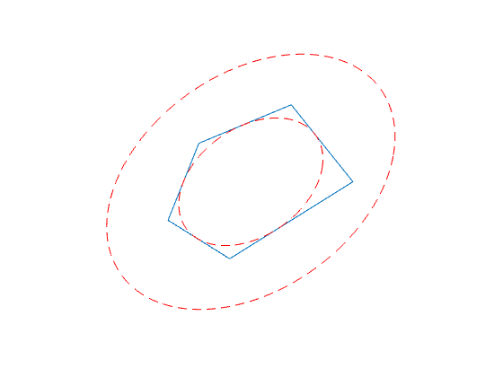

% Section 8.4.1, Boyd & Vandenberghe "Convex Optimization" % Original version by Lieven Vandenberghe % Updated for CVX by Almir Mutapcic - Jan 2006 % (a figure is generated) % % We find the ellipsoid E of maximum volume that lies inside of % a polyhedra C described by a set of linear inequalities. % % C = { x | a_i^T x <= b_i, i = 1,...,m } (polyhedra) % E = { Bu + d | || u || <= 1 } (ellipsoid) % % This problem can be formulated as a log det maximization % which can then be computed using the det_rootn function, ie, % maximize log det B % subject to || B a_i || + a_i^T d <= b, for i = 1,...,m % problem data n = 2; px = [0 .5 2 3 1]; py = [0 1 1.5 .5 -.5]; m = size(px,2); pxint = sum(px)/m; pyint = sum(py)/m; px = [px px(1)]; py = [py py(1)]; % generate A,b A = zeros(m,n); b = zeros(m,1); for i=1:m A(i,:) = null([px(i+1)-px(i) py(i+1)-py(i)])'; b(i) = A(i,:)*.5*[px(i+1)+px(i); py(i+1)+py(i)]; if A(i,:)*[pxint; pyint]-b(i)>0 A(i,:) = -A(i,:); b(i) = -b(i); end end % formulate and solve the problem cvx_begin variable B(n,n) symmetric variable d(n) maximize( det_rootn( B ) ) subject to for i = 1:m norm( B*A(i,:)', 2 ) + A(i,:)*d <= b(i); end cvx_end % make the plots noangles = 200; angles = linspace( 0, 2 * pi, noangles ); ellipse_inner = B * [ cos(angles) ; sin(angles) ] + d * ones( 1, noangles ); ellipse_outer = 2*B * [ cos(angles) ; sin(angles) ] + d * ones( 1, noangles ); clf plot(px,py) hold on plot( ellipse_inner(1,:), ellipse_inner(2,:), 'r--' ); plot( ellipse_outer(1,:), ellipse_outer(2,:), 'r--' ); axis square axis off hold off
Calling SDPT3 4.0: 34 variables, 15 equality constraints For improved efficiency, SDPT3 is solving the dual problem. ------------------------------------------------------------ num. of constraints = 15 dim. of sdp var = 6, num. of sdp blk = 2 dim. of socp var = 15, num. of socp blk = 5 dim. of linear var = 6 ******************************************************************* SDPT3: Infeasible path-following algorithms ******************************************************************* version predcorr gam expon scale_data HKM 1 0.000 1 0 it pstep dstep pinfeas dinfeas gap prim-obj dual-obj cputime ------------------------------------------------------------------- 0|0.000|0.000|1.8e+01|9.4e+00|1.3e+03| 1.441021e+01 0.000000e+00| 0:0:00| chol 1 1 1|1.000|0.628|8.3e-06|3.6e+00|5.4e+02| 5.502362e+01 -5.884367e+00| 0:0:00| chol 1 1 2|1.000|0.991|5.8e-06|4.2e-02|4.4e+01| 3.953225e+01 -8.633868e-02| 0:0:00| chol 1 1 3|0.915|1.000|7.6e-07|1.0e-03|3.9e+00| 3.947314e+00 4.254554e-02| 0:0:00| chol 1 1 4|0.691|1.000|2.8e-07|1.0e-04|1.9e+00| 2.071907e+00 1.972134e-01| 0:0:00| chol 1 1 5|0.972|1.000|1.1e-08|1.0e-05|5.5e-01| 1.147511e+00 5.991432e-01| 0:0:00| chol 1 1 6|1.000|0.939|1.6e-09|1.6e-06|7.2e-02| 9.841548e-01 9.117756e-01| 0:0:00| chol 1 1 7|0.951|0.954|5.3e-10|1.7e-07|3.6e-03| 9.536201e-01 9.500190e-01| 0:0:00| chol 1 1 8|0.978|0.975|2.5e-10|1.4e-08|8.8e-05| 9.523368e-01 9.522492e-01| 0:0:00| chol 1 1 9|0.955|0.977|4.9e-11|3.7e-10|2.7e-06| 9.523088e-01 9.523061e-01| 0:0:00| chol 1 1 10|0.987|1.000|6.5e-13|9.8e-12|2.4e-07| 9.523076e-01 9.523074e-01| 0:0:00| chol 1 1 11|0.993|1.000|5.2e-15|1.0e-12|1.3e-08| 9.523075e-01 9.523075e-01| 0:0:00| stop: max(relative gap, infeasibilities) < 1.49e-08 ------------------------------------------------------------------- number of iterations = 11 primal objective value = 9.52307513e-01 dual objective value = 9.52307500e-01 gap := trace(XZ) = 1.33e-08 relative gap = 4.59e-09 actual relative gap = 4.59e-09 rel. primal infeas (scaled problem) = 5.20e-15 rel. dual " " " = 1.00e-12 rel. primal infeas (unscaled problem) = 0.00e+00 rel. dual " " " = 0.00e+00 norm(X), norm(y), norm(Z) = 2.2e+00, 2.6e+00, 4.6e+00 norm(A), norm(b), norm(C) = 7.6e+00, 2.0e+00, 3.7e+00 Total CPU time (secs) = 0.23 CPU time per iteration = 0.02 termination code = 0 DIMACS: 5.2e-15 0.0e+00 1.1e-12 0.0e+00 4.6e-09 4.6e-09 ------------------------------------------------------------------- ------------------------------------------------------------ Status: Solved Optimal value (cvx_optval): +0.952308
